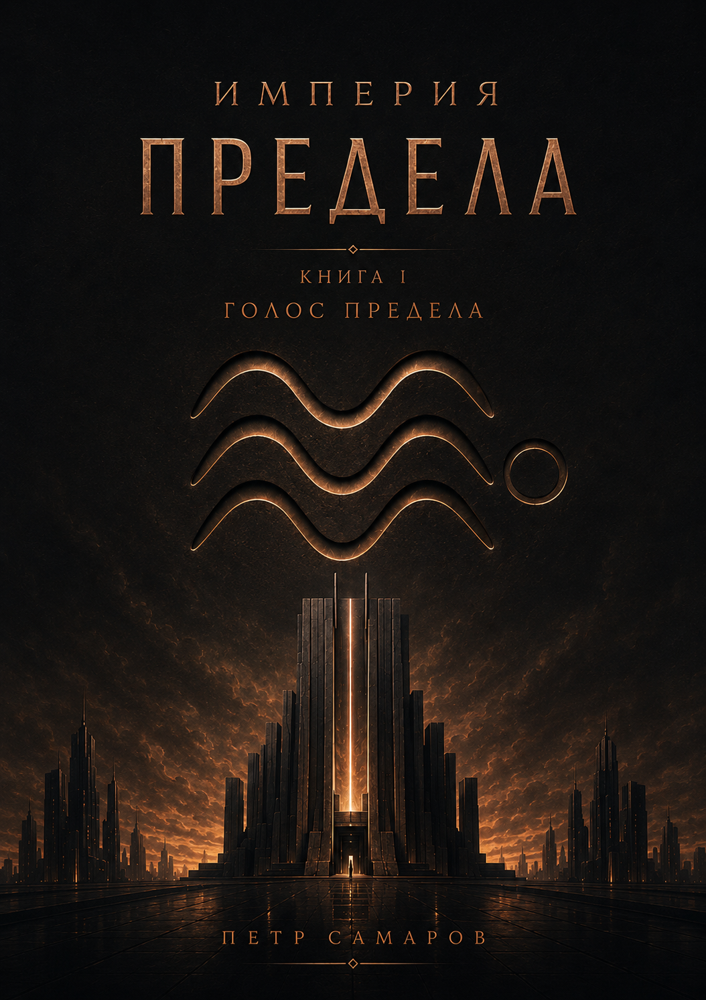

Empire
of the Limit
Philosophical science fiction exploring memory, order, freedom, and the price of perfect systems.
The first novel in a planned nine-book philosophical science fiction series.
The Limit preserves humanity’s memory, measures the value of every action, and maintains the balance of a vast civilization. People trust it as naturally as air or light. But then, across the Empire, events begin to occur that should not be possible.
Order was eternal. Until it stopped answering.
Voice of the Limit is a novel about memory, power, freedom of choice, and the search for meaning in a world where order was believed to be permanent.
A young novice of the Aurata Order, an engineer, a flawless servant of the system, and a chronicler all encounter the same impossible question.
What happens when a perfect system still functions, but can no longer explain itself?
This is not a simple story of rebellion against evil. It is a story about a civilization that trusted form for so long that it forgot how to hear living meaning.
Not a battle of good and evil. A story about the cost of perfect order.
Fragments from a world where form has long since become law.
“When form falls silent, meaning must speak. And when meaning falls silent, Form will sing by itself.”
“There are voices not inscribed into the structure. That is not a failure. That is a call.”
“Talent beyond Measure is a fault. A fault that can be heard.”
“If Measure is observed, meanings will follow.”
“We have no right to ask. But if the Limit does not answer, we must hear what remains of its echo.”
“Order does not disappear at once. First, it ceases to be heard.”
Help bring Empire of the Limit to English readers.
The Russian edition is available now. The next step is a professional English translation. You can read a free sample on Patreon and support the project there.
Become a Patron
Support the English translation and follow the development of the series.
Support on Patreon